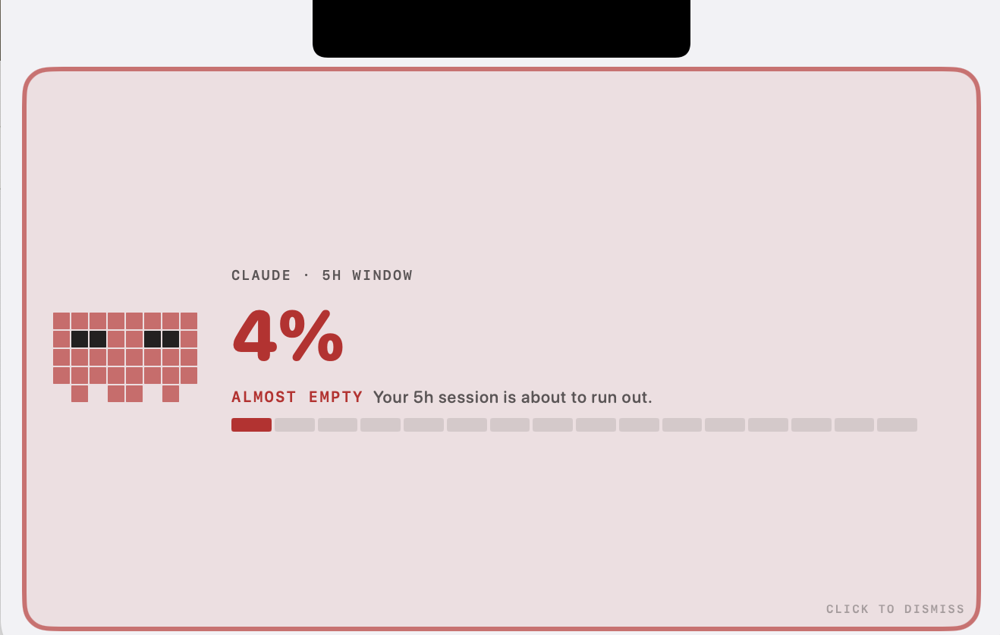

Claude Code and Codex
Fuel gauge for Claude Code and Codex, in your Mac's notch
Percent left in the 5-hour and weekly windows, a burn projection (“runs out 16:40”), and alerts that escalate at 25, 15, 10, and 5%. Native Swift. Local-first. No account. No telemetry.
brew install --cask --no-quarantine luisroquette-labs/tap/notchagentHomebrew 3.7.1. On some Homebrew versions, run brew trust --cask luisroquette-labs/tap/notchagent first.
Not affiliated with Anthropic or OpenAI.
The notch
The number you already look up, where your eyes already are.
Claude on the left wing, Codex on the right. The percent left is colored by state, and the micro-gauge drains like a fuel tank. Hover to expand. Click to pin. Side-scroll the trackpad to change pages. Esc closes.

What it shows
One glance. The questions that used to wait for an error.
Now
What is left
Per-provider cards with a fixed layout: the 5-hour window always above the weekly window. Percent, segmented gauge, reset time, and a live countdown.

Burn
Will it last?
Actual usage plus a dotted projection at the current pace, with a verdict such as “runs out 16:40”. An exhausted window says nothing can burn. It never claims you are safe until reset.

Rhythm
When you burn
Twenty-four bars by local hour, today or the last 7 days, with the current hour highlighted.

Models
Which model is healthy
Claude family and OpenAI models, with a live probe and per-model usage read from your own transcripts.

Alerts and API spend
It taps you before the window hits zero.
25 / 15 / 10 / 5%
Escalating alerts
An animated notch takeover that gets more severe as the window runs out, plus a matching system notification. One trigger per threshold per window, re-armed on reset.
10 providers
API spend and balance
Spend, balance, and plan stay separate across Anthropic, OpenAI, DeepSeek, OpenRouter, Google, xAI, ElevenLabs, Firecrawl, twitterapi.io, and X. Every number shows its source.
On device
The source of the number
Claude percentages come from Anthropic’s rate-limit headers. Codex percentages come from OpenAI’s authenticated local app server. Missing windows are not invented.

Download
Free. Direct. No form before the file.
Three ways onto the Mac. The App Store build is sandboxed and updated by Apple. The Homebrew cask and the GitHub Release are the notarized direct download.
Mac App Store
US storefront
Reviewed by Apple. One click, no Terminal, updates from the App Store.
Download on the Mac App StoreGitHub Releases
Notarized direct download
Developer ID signed disk image for 3.7.1. Gatekeeper accepts the stapled ticket.
Download NotchAgent-3.7.1.dmgHomebrew
Cask 3.7.1
The tap serves 3.7.1. On some Homebrew versions, trust the cask before installing.
brew trust --cask luisroquette-labs/tap/notchagent brew install --cask --no-quarantine luisroquette-labs/tap/notchagent
Source
Read every line
MIT license. Build it yourself with Xcode 15+ or the Swift 6 toolchain.
View the repositorymacOS 14 or later · Apple silicon · Macs without a notch get a floating pill · Windows is a preview you build from source
Privacy
Local-first. No account. No telemetry.
NotchAgent has no backend and no login of its own. Credentials stay in the macOS Keychain. Portal sessions use isolated WebKit profiles. Diagnostics strip credentials, identity, and amounts.
- No account. Nothing to sign up for, and no contact form in front of the download.
- No telemetry. The app does not phone home with usage, crashes, or a device id.
- Official quota reads. Codex uses the local app server you already authenticated. The optional Claude probe is one token to Anthropic and can be turned off.
- Open source. MIT licensed. Read the code before you run it.
FAQ
Before you install.
Is it free?
Yes. The Mac App Store edition, the Homebrew cask, and the GitHub Release are free.
Do I need an account?
No NotchAgent account. It reads Claude Code and Codex data that is already on your Mac. API account monitoring is opt-in and stores credentials in the Keychain.
Does it send telemetry?
No. There is no analytics endpoint in the app. The only optional network call that spends a token is the Claude quota probe, and Settings can disable it.
Are you affiliated with Anthropic or OpenAI?
No. NotchAgent is not affiliated with, endorsed by, or sponsored by Anthropic or OpenAI. Claude, Claude Code, and Codex are their products. NotchAgent only reads the local signals those tools already write.
What Mac do I need?
macOS 14 or later on Apple silicon. On a display without a notch, the same gauge sits in a floating pill.
App Store or direct download?
The App Store build is sandboxed and updated by Apple. Homebrew and GitHub Releases are the notarized direct build, updated with Sparkle. Both are the same product.
Does it work with the 5-hour limit removed?
When Anthropic’s probe reports a weekly window and no 5-hour window, the card says there is no 5-hour session limit on that plan and the weekly window becomes the headline. It does not draw a 5-hour gauge for a limit that is gone.
Install
Stop finding the limit by hitting it.
Free · macOS 14+ · no account · no telemetry
Not affiliated with Anthropic or OpenAI.